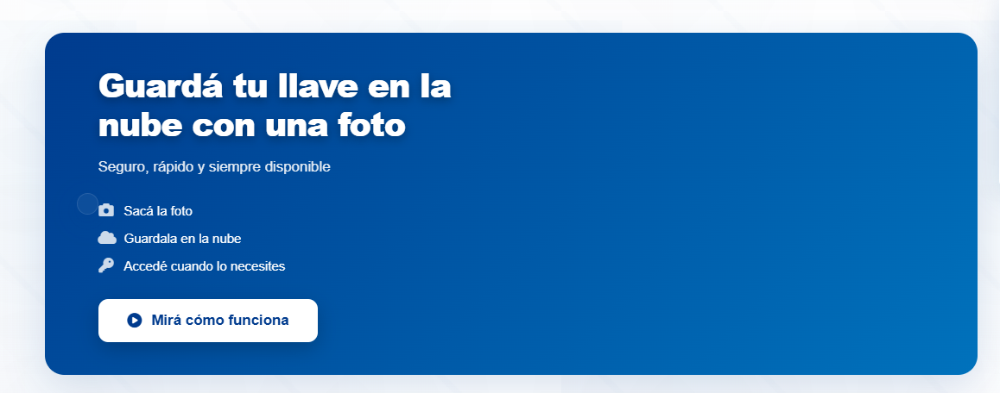

Cómo funciona
Guarda tu llave en la nube en 3 pasos

3 pasos simples
Proceso rápido, seguro y disponible cuando lo necesites
1. Sacá la foto
Tomá una foto clara de tu llave siguiendo las indicaciones.
2. Guardala en la nube
Subí la imagen a tu perfil para resguardarla de forma segura.
3. Accedé cuando necesites
Recuperá tu llave desde cualquier punto de la red.
Beneficios
Por qué elegir Kioskeys
Seguro
Encriptación y medidas de seguridad en cada paso.
Rápido
Proceso optimizado para que no pierdas tiempo.
Disponible
Acceso desde cualquier lugar con cobertura de red.